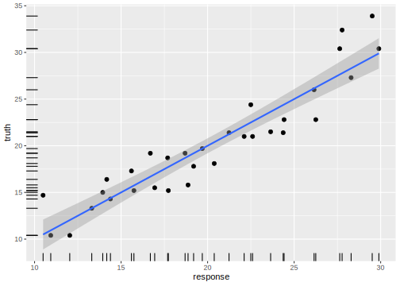

2.4 Train and Predict
In this section, we explain how tasks and learners can be used to train a model and predict to a new dataset. The concept is demonstrated on a supervised classification using the iris dataset and the rpart learner (classification tree).
Training a learner means fitting a model to a given data set. Subsequently, we want to predict the target value for new observations. These predictions are compared to the ground truth values to assess the quality of the model. In sum, the goal of training and predicting is to evaluate the predictive power of different models.
2.4.1 Creating Task and Learner Objects
The first step is to generate the following mlr3 objects from the task dictionary and the learner dictionary, respectively:
- The classification task:
- A learner for the classification tree:
2.4.2 Setting up the train/test splits of the data
It is common to train on a majority of the data. Here we use 80% of all available observations and predict on the remaining 20% observations. For this purpose, we create two index vectors:
2.4.3 Training the learner
The field model stores the model that is produced in the training step.
Before the train method is called on a learner object, this field is NULL:
Next, the classification tree is trained using the train set of the iris task, applying the $train() method of the Learner:
This operation modifies the learner in-place.
We can now access the stored model via the field $model:
print(learner$model)
## n= 166
##
## node), split, n, loss, yval, (yprob)
## * denotes terminal node
##
## 1) root 166 80 M (0.51807 0.48193)
## 2) V11>=0.1609 109 33 M (0.69725 0.30275)
## 4) V27>=0.8167 51 4 M (0.92157 0.07843) *
## 5) V27< 0.8167 58 29 M (0.50000 0.50000)
## 10) V45>=0.2383 12 0 M (1.00000 0.00000) *
## 11) V45< 0.2383 46 17 R (0.36957 0.63043)
## 22) V31< 0.3743 19 6 M (0.68421 0.31579) *
## 23) V31>=0.3743 27 4 R (0.14815 0.85185) *
## 3) V11< 0.1609 57 10 R (0.17544 0.82456)
## 6) V4>=0.0515 11 4 M (0.63636 0.36364) *
## 7) V4< 0.0515 46 3 R (0.06522 0.93478) *2.4.4 Predicting
After the model has been trained, we use the remaining part of the data for prediction.
Remember that we initially split the data in train_set and test_set.
prediction = learner$predict(task, row_ids = test_set)
print(prediction)
## <PredictionClassif> for 42 observations:
## row_id truth response
## 10 R R
## 12 R R
## 15 R M
## ---
## 182 M M
## 192 M M
## 208 M MThe $predict() method of the Learner returns a Prediction object.
More precise, as the learner is specialized for classification, a LearnerClassif returns a PredictionClassif object.
A prediction objects holds The row ids of the test data, the respective true label of the target column and the respective predictions.
The simplest way to extract this information is by converting to a data.table():
head(as.data.table(prediction))
## row_id truth response
## 1: 10 R R
## 2: 12 R R
## 3: 15 R M
## 4: 18 R M
## 5: 19 R M
## 6: 28 R RFor classification, you can also extract the confusion matrix:
2.4.5 Changing the Predict Type
Classification learners default to predicting the class label.
However, many classifiers additionally also tell you how sure they are about the predicted label by providing posterior probabilities.
To switch to predicting these probabilities, the predict_type field of a LearnerClassif must be changed from "response" to "prob":
learner$predict_type = "prob"
# re-fit the model
learner$train(task, row_ids = train_set)
# rebuild prediction object
prediction = learner$predict(task, row_ids = test_set)The prediction object now contains probabilities for all class labels:
# data.table conversion
head(as.data.table(prediction))
## row_id truth response prob.M prob.R
## 1: 10 R R 0.06522 0.93478
## 2: 12 R R 0.06522 0.93478
## 3: 15 R M 0.92157 0.07843
## 4: 18 R M 0.63636 0.36364
## 5: 19 R M 0.92157 0.07843
## 6: 28 R R 0.14815 0.85185
# directly access the predicted labels:
head(prediction$response)
## [1] R R M M M R
## Levels: M R
# directly access the matrix of probabilities:
head(prediction$prob)
## M R
## [1,] 0.06522 0.93478
## [2,] 0.06522 0.93478
## [3,] 0.92157 0.07843
## [4,] 0.63636 0.36364
## [5,] 0.92157 0.07843
## [6,] 0.14815 0.85185Analogously to predicting probabilities, many regression learners support the extracting of a standard error estimates by setting the predict type to "se".
2.4.6 Plotting Predictions
Analogously to plotting tasks, mlr3viz provides a autoplot() method.
All available types are listed on the manual page of autoplot.PredictionClassif() or autoplot.PredictionClassif(), respectively.
library(mlr3viz)
task = tsk("sonar")
learner = lrn("classif.rpart", predict_type = "prob")
learner$train(task)
prediction = learner$predict(task)
autoplot(prediction)
library(mlr3viz)
library(mlr3learners)
local({ # we do this locally to not overwrite the objects from previous chunks
task = tsk("mtcars")
learner = lrn("regr.lm")
learner$train(task)
prediction = learner$predict(task)
autoplot(prediction)
})
2.4.7 Performance assessment
The last step of an modeling is usually the performance assessment.
The quality of the predictions of a model in mlr3 can be assessed with respect to a number of different performance measures.
At the performance assessment we choose a specific performance measure to quantify the predictions.
This is done by comparing the predicted labels with the true labels.
Predefined available measures are stored in mlr_measures (with convenience getter msr()):
mlr_measures
## <DictionaryMeasure> with 51 stored values
## Keys: classif.acc, classif.auc, classif.bacc, classif.ce,
## classif.costs, classif.dor, classif.fbeta, classif.fdr, classif.fn,
## classif.fnr, classif.fomr, classif.fp, classif.fpr, classif.logloss,
## classif.mcc, classif.npv, classif.ppv, classif.precision,
## classif.recall, classif.sensitivity, classif.specificity, classif.tn,
## classif.tnr, classif.tp, classif.tpr, debug, oob_error, regr.bias,
## regr.ktau, regr.mae, regr.mape, regr.maxae, regr.medae, regr.medse,
## regr.mse, regr.msle, regr.pbias, regr.rae, regr.rmse, regr.rmsle,
## regr.rrse, regr.rse, regr.rsq, regr.sae, regr.smape, regr.srho,
## regr.sse, selected_features, time_both, time_predict, time_trainWe select the accuracy (classif.acc) and call the method $score() of the Prediction object.
Note that, if no measure is specified, classification defaults to classification error (classif.ce) and regression defaults to the mean squared error (regr.mse).